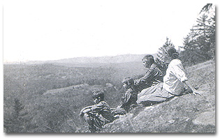
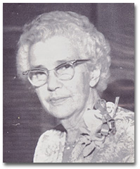

Джессі Тафт: воля, межі й право бути автором власного життя
Історія психології любить великі чоловічі імена. Фройд відкрив несвідоме, Ранк повернув у психоаналіз волю, Роджерс зробив емпатію серцем терапії. Джессі Тафт опинилася між ними й майже зникла за їхніми постатями. Її робочими місцями були не лише університетські аудиторії, а й жіноча в'язниця, дитячий притулок, соціальна служба та кімната, де семирічна дитина перевіряла дорослого на міцність.
На початку XX століття допомога часто починалася з того, що фахівець визначав, ким є людина і що з нею слід зробити. Джулія Джессі Тафт (Julia Jessie Taft, 1882–1960) поступово перевернула цю конструкцію. Клієнт у її роботі отримував волю: міг наблизитися, чинити опір, узяти лише частину запропонованого або зовсім відмовитися. Допомога переставала бути процедурою над людиною і ставала подією, у якій вона сама бере участь.
Тафт була психологинею, соціальною дослідницею, ранньою феміністською мислителькою, фахівчинею з улаштування дітей у сім'ї та перекладачкою Отто Ранка. З усього цього виросла функціональна школа соціальної роботи. Її цікавила напруга живої зустрічі: клієнт хоче допомоги й водночас захищається від неї; працівник співчуває, але представляє установу з правилами; час зустрічі дає безпеку саме тому, що має початок і кінець. Згодом Роджерс зробить центром терапії емпатію, конгруентність і безумовне позитивне ставлення. У традиції Тафт поруч із ними залишаться воля, спротив, межі та право людини бути автором власного життя.
🌐 Коротка довідка: Jessie Taft у Wikipedia (англійською мовою).
«Я» — дуже складне, невловиме й мінливе явище. До нього слід наближатися зі смиренням, відкритим розумом і бажанням не стільки судити, скільки зрозуміти. “The self is a very complex, elusive, changing phenomenon and we should approach it with an humble spirit, an open mind and a desire not so much to judge as to understand.” Jessie Taft, “Relation of Personality Study to Child Placing”, 1919
Коли Тафт написала ці слова 1919 року, дитину в державній опіці легко було звести до картки з результатом тесту й позначкою про «нормальність». Потім для неї знаходили «пристойну побожну сім'ю» і вважали справу завершеною. Тафт затримала погляд на самій дитині: що вона любить, чого боїться, як захищається, як пережила втрату дому і що станеться з нею серед чужих людей? Із цього простого повороту уваги почалася її професійна революція.
Етап 1. Айова: тиша, книжки й музика (1882–1908)
Уявіть Де-Мойн наприкінці XIX століття: задушливі літні вечори, будинок забезпеченого торговця фруктами, три доньки й дедалі менше розмов. Тут 24 червня 1882 року народилася Джессі — старша дитина Чарльза Честера та Аманди Мей Тафт. Америка навколо шалено багатіла на залізницях і промисловості, але жінка ще не мала загальнонаціонального виборчого права, а надмірна освіченість могла здаватися небезпечною для її «природного» призначення.
Мати Джессі поступово втрачала слух. Разом із ним дім втрачав легкість: гості приходили рідше, звичайна розмова вимагала зусиль, а тиша ставала частиною родинного побуту. Джессі заповнювала її книжками й фортепіано. Вона добре вчилася, багато читала, а за клавішами могла дати форму почуттям, для яких удома бракувало голосу.
Власне тіло давало їй значно менше свободи. Вона соромилася ваги й незграбності, важко переживала шкільні насмішки та закохувалася з тією силою, з якою самотня підлітка шукає вихід у більше життя — серед біографічних згадок залишилися водій трамвая й директор школи. Джессі шукала й духовний дім: переходила між місцевими церквами, доки не зупинилася на унітаріанстві, де віра могла співіснувати з розумом, соціальною реформою та жіночою самостійністю.
💬 Спогад Вірджинії Робінсон
Робінсон описувала юність Джессі як довгу пустелю нудних вечорів на ґанку в задушливій айовській спеці. Зовні життя минало спокійно, а внутрішній світ Джессі потребував значно більшого простору.
Університет уперше відкрив перед нею двері з цього замкненого світу. 1900 року Джессі вступила до Drake University, закінчила його 1904-го, а наступний рік провела в Чиказькому університеті й здобула ступінь bachelor of philosophy. Та свобода виявилася короткою. Почуття обов'язку повернуло її до Де-Мойна, де вона викладала латину, математику й німецьку у West Des Moines High School. Молода жінка з двома університетськими освітами знову стояла в знайомій шкільній будівлі — тепер уже перед класом.

Улітку 1908 року Джессі вдруге поїхала до Чикаго — цього разу вже по докторський ступінь і власне життя. В оселі професора філософії Джеймса Тафтса мешкало кілька студенток. Серед них була Вірджинія Робінсон. Вони ще не знали, що проведуть поруч наступні п'ятдесят два роки, створять спільний дім, виховають двох дітей і разом побудують нову школу соціальної роботи.
Етап 2. Чикаго, фемінізм і реальність в'язниці (1908–1918)
Чикаго зустрів її університетом, у якому філософію перевіряли життям. Джордж Герберт Мід, Джеймс Тафтс, Джон Дьюї та Вільям Джеймс сперечалися про людину в дії: як «я» народжується між людьми, як чужий погляд стає частиною нашого образу себе, як середовище змінює особистість. Для Джессі це звучало майже автобіографічно. Тиша матері, сором за тіло, шкільні погляди, університетська свобода — усе це вже показало їй, що особистість формується у стосунках.
Вірджинія Робінсон запам'ятала першу зустріч без прикрашання. Перед нею стояла велика, незграбна дівчина «із Заходу» — пряма, практична, з найдобрішими очима, які вона бачила. Поруч із Джессі люди несподівано починали говорити відверто. Вона не влаштовувала урочистого «розкриття душі» й не тиснула запитаннями; сама її присутність давала співрозмовникові місце. Згодом ця людська якість стане професійним методом.
У 1913 році вона захистила в Department of Philosophy Чиказького університету дисертацію The Woman Movement from the Point of View of Social Consciousness («Жіночий рух з погляду соціальної свідомості»). Друковане видання з'явилося в середині 1910-х років.


The Woman Movement from the Point of View of Social Consciousness
Дисертація аналізує жіночий рух як наслідок соціальної перебудови. Модерна економіка потребує освіченої й активної людини, тоді як домашній порядок вимагає від жінки покори. Тафт показує, як конфлікт між цими ролями впливає на самосвідомість, освіту, працю та участь жінок у суспільстві.
Дисертація стала раннім текстом феміністського прагматизму, але університетської кафедри для її авторки не знайшлося. Інтелектуально амбітні жінки частіше потрапляли в соціальну роботу — молоду професію з нижчим статусом, зате з безпосереднім доступом до людського життя. Саме там абстрактна теорія Тафт отримала найсуворішу перевірку.
Ще влітку 1912 року вона разом із Робінсон відклала дисертацію й поїхала досліджувати жінок у New York State Reformatory for Women at Bedford Hills. Після захисту Джессі повернулася туди помічницею суперінтенданта. За університетськими словами «воля», «соціальне я» і «взаємодія» тепер стояли замкнені двері, покарання, страх і реальна влада однієї людини над іншою.
Одного разу молода ув'язнена вибухнула насильством. Тафт довелося закувати її в кайданки й відвести до ізолятора. Вона поставила межу жорстко, а потім щодня приходила до цієї жінки — не відвернулася й не вдала, що покарання скасувало людський зв'язок. Через багато років колишня ув'язнена написала Джессі: ви були доброю до мене в моїй некерованій дитячості, а головне — ніколи мені не брехали. В одній історії вже містився майбутній метод Тафт: межа може бути твердою, а стосунок — чесним і не принизливим.
Приблизно через два роки Тафт перейшла до New York State Charities Aid Association і очолила Department of Social Service. Вона виступала в установах і громадах із лекціями про нову тоді психічну гігієну. Назви її публічних виступів звучали майже як газетні заголовки: «Чи все гаразд із психікою вашої дитини?» та «Як захистити дитину від психічної хвороби».
🧠 Що таке психічна гігієна
1908 року Кліффорд Бірс розповів Америці, що відбувається з людиною після психічного зриву: у книжці A Mind That Found Itself («Розум, який знайшов себе») він описав лікарняне насильство, пережите на власному тілі. Розповідь перетворила приватний жах на суспільне питання. Психіатр Адольф Меєр дав новому рухові назву mental hygiene, а вже 1909 року виник National Committee for Mental Hygiene.
Його прихильники хотіли приходити раніше за катастрофу — працювати в школах, сім'ях і громадах, поки людину ще можна підтримати без ізоляції. Разом із гуманною ідеєю рух ніс небезпечну мову «нормальності», спадкової «дефективності» та євгеніки. Тафт починала всередині цієї системи: користувалася її тестами й категоріями, а потім дедалі уважніше дивилася на те, чого вони не бачили, — на конкретну людину та її стосунки зі світом.
Раз на тиждень вона працювала соціальною працівницею в Cornell Clinic of Psychopathology — першій клініці психічної гігієни Нью-Йорка. Там легко було поставити діагноз і закрити історію. Тафт продовжувала її за межами кабінету, бо, як сама писала, людину неможливо просто покинути. Вона приходила додому до пацієнтів і гуляла з дівчиною, яка відмовлялася говорити та яку тогочасні документи називали хворою на деменцію. Спершу між ними була майже суцільна мовчанка. Згодом дівчина заговорила, пізніше вийшла заміж і ще роками надсилала Тафт листи та різдвяні подарунки.
Інша молода пацієнтка хотіла померти. Джессі допомогла їй пройти крізь депресію, а потім — зробити наступний цілком земний крок і вступити до коледжу. Так клінічний ярлик втрачав владу над усією біографією: після нього залишалися прогулянка, навчання, дружба, шлюб і життя, яке ще могло продовжитися.
У Нью-Джерсі Тафт створила невелику експериментальну Farm School. Проєкт обірвала Перша світова війна: психіатра-консультанта призвали до війська, і школа закрилася. Тафт встигла побачити, як швидко діти відгукуються на зміну середовища, й спочатку повірила, що змінити їх легше, ніж дорослі звикли думати. Подальша робота зробить цю надію тверезішою: добра нова домівка дає шанс, але не стирає одним рухом страх, втрату й спротив.
Етап 3. Діти, Філадельфія та власна сім'я (1918–1924)
1918 року війна звільнила місце для нового повороту: Pennsylvania School of Social Work втратила частину штату й запросила Вірджинію Робінсон. Тафт поїхала за нею до Філадельфії та очолила Department of Child Study у Seybert Institution. Через цей тимчасовий притулок проходили діти, яких готували до життя в прийомних сім'ях. У дорослих були анкети, тести й добрі наміри; у дітей — уже пережитий розрив і майже жодної влади над наступним рішенням.
На початку XX століття «підбір сім'ї» міг уміститися в одну впевнену фразу: порядна богобоязлива пара погодилася взяти дитину, отже, все складеться. Тафт бачила ризик, захований у цій простоті. Дитину забирали з єдиного знайомого світу й передавали чужим дорослим, а потім чекали вдячності та слухняності. Вона вимагала знати її історію, здоров'я, характер і страхи; досліджувати майбутню сім'ю; залишатися поруч після розміщення, коли святковий день усиновлення вже минув, а справжнє спільне життя тільки почалося.
При притулку Тафт відкрила маленьку денну школу. Вона проіснувала лише рік — діти змінювалися надто швидко, — проте дала можливість дивитися на них поза тестовим бланком. Працівники спостерігали, як дитина входить у гру, зустрічає перешкоду, нападає, відступає, впирається або здається; що в неї виходить і в яку мить спалахує гнів. Поведінка починала розповідати історію. За «неслухняністю» можна було побачити спосіб вижити у світі, який уже раз виявився ненадійним.
Тафт усе ще користувалася мовою своєї епохи — тестами, категоріями «нормального», «ненормального» й «дефекту». Але в статті 1919 року вона зробила крок за межі цієї мови. Перенести дитину з рідного середовища до чужої сім'ї вона назвала «найделікатнішим з експериментальних завдань». Усиновлення могло дати любов і належність, та починалося воно з розриву; нова сім'я мала зустрітися і з надією дитини, і з усім, що вона принесла із собою.
Із 1919 року денна робота Тафт переходила у вечірні аудиторії Pennsylvania School of Social Work. Вона навчала й супервізувала працівників, консультувала установи, писала для професійних і популярних видань. Усі її ролі сходилися в одній точці: навіть найтепліша розмова відбувається всередині системи. За спиною спеціаліста стоять обіцянки установи, її правила, гроші, доступний час і межі компетенції — і клієнт відчуває їх, навіть коли працівник воліє про них мовчати.
Дві жінки, двоє дітей і дім у Флаертауні
Професійні переконання невдовзі увійшли до їхнього власного дому. Джессі Тафт і Вірджинія Робінсон уже багато років були супутницями життя: вели спільне господарство, працювали поруч і будували майбутнє, для якого публічна мова їхньої епохи майже не мала назви. Історики соціальної роботи та ЛГБТК-історії розглядають їхній союз у контексті жіночих одностатевих партнерств.
1921 року через знайомих у нью-йоркській соціальній службі до них прийшов приблизно восьмирічний Еверетт. Він підтримував зв'язок із біологічним батьком і приніс у нову сім'ю вже сформовану історію. Приблизно за рік у домі з'явилася п'ятирічна Марта, яка теж мала живі родинні зв'язки. Дві фахівчині, що навчали інших розуміти дітей, тепер щодня зустрічалися з тією самою складністю за власним столом.
«Ми дуже відчуваємо себе сім'єю й іноді дивуємося, чи переживемо це». “We feel very much like a family, and some times wonder whether we are going to live through it.” Джессі Тафт у листі колезі, 1923

Фраза про те, «чи переживемо це», не була декоративним жартом. У сімейному житті вистачало любові, виснаження й конфліктів. У старших класах Еверетт утік до біологічної бабусі в Канзас — різке нагадування, що усиновлена дитина не починає біографію в день появи нового дому. Його донька пізніше говорила, що батько поважав Джессі й Вірджинію, хоча їхня наукова слава для нього нічого не змінювала: вони залишалися двома людьми, які його всиновили.
Свій дім у Флаертауні неподалік Філадельфії вони називали The Pocket («Кишенька»). Тут вони не були самі. Поруч селилися професійні жінки, деякі теж жили парами й виховували прийомних дітей. Вони купували будинки неподалік, проводили разом свята, підхоплювали дітей і допомагали одна одній у кризах. Закон майже не бачив таких сімей, тому вони власноруч створили те, чого він їм не давав: мережу спорідненості, безпеки й щоденної взаємодопомоги.

Етап 4. Отто Ранк і народження функціональної школи (1924–1936)
До середини 1920-х Тафт знала про дитяче влаштування більше, ніж більшість американських фахівців, і все ж дедалі гостріше відчувала власну безпорадність. Тест міг виміряти інтелект, історія родини — пояснити минуле, добра домівка — змінити середовище. Жоден із цих інструментів не пояснював, що саме відбувається між клієнтом і людиною, яка намагається йому допомогти. Чому один приймає підтримку, інший мовчить, третій нападає, а четвертий ніби погоджується — і не змінює нічого?
1924 року в цю професійну кризу увійшов Отто Ранк. Колишній найближчий співробітник Фройда саме відходив від ортодоксального психоаналізу. Його цікавила не нескінченна археологія дитинства, а драма, що розгортається зараз: воля людини, страх відокремлення, її боротьба з терапевтом і момент, коли стосунок неминуче закінчиться. Тафт упізнала тут проблеми, які роками бачила в притулках і соціальних службах, але ще не вміла назвати.
Восени 1926 року вона сама сіла в крісло клієнтки. Аналіз у Ранка в Нью-Йорку тривав лише два тижні — неймовірно коротко за мірками класичного психоаналізу. Цього вистачило, щоб досвідчена терапевтка побачила власну роботу з іншого боку.
«Мені знадобилося лише два тижні, щоб піддатися новому типу стосунків; у цьому досвіді природа моїх власних терапевтичних невдач раптом стала ясною». “It took only two weeks for me to yield to a new kind of relationship, in the experiencing of which the nature of my own therapeutic failures became suddenly clear.” Пізніший спогад Джессі Тафт про аналіз у Ранка
Ранк не дав їй нового набору прийомів. Він дозволив пережити терапію як зустріч двох воль: клієнт входить у стосунок, випробовує його, захищається, наближається і вирішує, що з нього взяти. Чиказький прагматизм раптом з'єднався з клінікою. Особистість існувала не десь у глибині за поведінкою — вона народжувалася просто в контакті.
Відтоді Тафт стала головною американською інтерпретаторкою Ранка. Вона перекладала не лише його німецькі речення, а й сам спосіб мислення — для соціальних працівників, які щодня зустрічалися з чужою волею в лікарнях, школах і службах. Тафт допомагала Ранкові з лекціями, професійними контактами, працевлаштуванням та імміграцією до США. Їхня співпраця тривала п'ятнадцять років і залишила великий архів листування.
Книга про Гелен і Джона

The Dynamics of Therapy in a Controlled Relationship
Рецензія в American Journal of Sociology, 1934
Головна клінічна книга Тафт описує терапію двох семирічних дітей — Гелен і Джона. На матеріалі шістнадцяти годин роботи з Гелен і тридцяти однієї години з Джоном авторка показує спротив, прихильність, перенесення, встановлення меж і поступове відокремлення. Книга демонструє терапію як активний процес, у якому дитина використовує стосунок із фахівцем для розвитку власної волі.
Книга відкрила читачеві двері терапевтичної кімнати настільки широко, наскільки це дозволяли записи того часу. Соціолог Елсворт Феріс у рецензії 1934 року особливо відзначив повагу Тафт до дитини й сміливість винести складний клінічний матеріал на професійне обговорення. Водночас він помітив слабке місце: читач добре бачив, як розгортається процес, але механізм самої зміни залишався менш ясним.
Через три роки Тафт завершила іншу велику роботу. 1936 року Alfred A. Knopf видав її авторизовані переклади Will Therapy («Терапія волі») і Truth and Reality («Істина і реальність»). Ранк писав щільною філософською мовою; Тафт знала цю теорію зсередини — як клієнтка, терапевтка й викладачка. Завдяки цьому американські соціальні працівники отримали тексти, у яких воля, спротив і завершення стосунку стосувалися вже не віденських суперечок, а їхньої власної практики.

Will Therapy і Truth and Reality
Will Therapy розкриває терапевтичний процес через волю, спротив, актуальні стосунки та завершення контакту. Truth and Reality викладає ширшу філософію волі Ранка: становлення особистості, творчість, відокремлення та відповідальність за власне життя. Переклад Тафт поєднав точність філософських понять із мовою практичної допомоги.
Етап 5. Професорка, перекладачка й велика суперечка (1936–1952)
У 1913 році академія не знайшла місця для докторки Тафт. У 1934-му вона повернулася професоркою. Наступного року Pennsylvania School of Social Work увійшла до University of Pennsylvania, і разом із Джессі до університету ввійшов увесь матеріал її двадцятирічної роботи: жіноча в'язниця, психіатрична клініка, тимчасовий притулок, прийомні сім'ї та власний дім із двома дітьми. Її теорія пахла установами й знала, що відбувається після завершення красивої лекції.
Навколо Тафт і Робінсон зібралися Фредерік Аллен, Кеннет Прей, Рут Смоллі та інші практики. Так виникла функціональна школа соціальної роботи — не як одноосібний винахід, а як жива майстерня. Ідеї перевіряли в роботі з родинами, розбирали на супервізіях, сперечалися про них у класах і повертали назад у практику.
Невдовзі ця майстерня опинилася в центрі великої професійної суперечки. Діагностична школа питала: що в історії та психіці людини спричинило проблему і як її лікувати? Функціональна школа починала з іншого: для чого людина прийшла саме до цієї служби, як використовує допомогу зараз і що відбувається між нею та працівником? Обидва напрями розвивали професію, але дивилися в різні точки.
- Діагностичний підхід більше уваги приділяв історії особистості, психосоціальній оцінці, внутрішній причині проблеми й плану лікування.
- Функціональний підхід ставив у центр актуальне використання допомоги клієнтом, його волю, стосунок із працівником, конкретну функцію установи, початок і завершення контакту.
Суперечка швидко вийшла за межі статей. Вона визначала навчальні програми, редакційну політику журналів і навіть те, кого візьмуть на роботу. Випускник Пенсильванської школи міг прийти на співбесіду з добрими рекомендаціями й отримати відмову лише тому, що його навчили бачити в клієнтові активного учасника, а не об'єкт діагностичного плану. Теорія безпосередньо вирішувала долі фахівців — і спосіб, у який ті поводитимуться з людьми.
Функція установи в допомагаючих стосунках
Тафт просила студентів помітити третього учасника будь-якої професійної зустрічі. У кімнаті сидять клієнт і працівник, але разом із ними присутня лікарня, школа, суд або служба у справах дітей. Саме установа вирішує, чи може дати нічліг, влаштувати дитину, оплатити лікування або запропонувати лише кілька консультацій.
Приховувати цю владу за теплою посмішкою було для Тафт формою нечесності. Людина мала знати, чому відбулася зустріч, що їй справді доступно, які правила діють і коли допомога завершиться. Усередині ясно названої рамки з'являвся вибір: скористатися службою, сперечатися з нею, прийняти частину допомоги або піти. Саме так клієнт повертав собі авторство там, де система звикла вирішувати за нього.

A Functional Approach to Family Case Work
University of Pennsylvania Press
У 216-сторінковому збірнику під редакцією Тафт функціональний підхід перенесено в роботу з сім'ями. Автори розглядають конкретні можливості соціальної служби, участь родини у виборі, межі професійної ролі та використання допомоги самими клієнтами. Книга стала практичним викладом методу для сімейної соціальної роботи.
Соціальна робота під час війни
Під час Другої світової війни ці питання перестали бути суто професійною дискусією. До філадельфійських організацій, зокрема Children’s Aid Society of Pennsylvania, потрапляли європейські діти-біженці. Треба було знайти ліжко, школу й законного опікуна, але за кожною практичною задачею стояла дитина, яка втратила дім, розлучилася з батьками й мала ввійти до чергової незнайомої родини.
За масштабом європейської катастрофи врятованих було болісно мало. Жорстка імміграційна політика США пропустила в країну без батьків трохи більше тисячі дітей за 1933–1945 роки. Соціальні працівники допомагали тим, хто дістався безпеки, й одночасно бачили величезну відсутню більшість — дітей, для яких кордон так і не відкрився.
Тут функціональна школа зустріла свою найважчу реальність. Установа вже визначала, де дитина житиме, хто стане її опікуном і якою мовою почнеться нове життя. Працівник не міг повернути їй утрачений світ. Він міг хоча б не відібрати останнє: право мати власну історію, сумувати, прив'язуватися, відштовхувати чужих дорослих і поступово вирішувати, кому знову довіряти.
Карл Роджерс і мережа впливу
У цей самий час у Рочестері молодий Карл Роджерс починав сумніватися в директивній психології. Ідеї функціональної школи доходили до нього не одним «великим одкровенням», а кількома дорогами: через соціальних працівниць, знайомих із філадельфійською практикою, через книги Тафт і Фредеріка Аллена, через тексти самого Ранка. У червні 1936 року Роджерс запросив Ранка до Рочестера на триденний семінар і почув джерело цих ідей наживо.
Періоди показують, коли кожна ланка найактивніше передавала й розвивала ці ідеї. Вони накладаються, бо вплив ішов одночасно через тексти, колег і особисту зустріч.
Роджерс відкрито визнавав цей вплив, а далі пішов власною дорогою. Він зробив емпатичне розуміння серцем клієнт-центрованої терапії й побудував навколо нього мову, дослідження та всесвітній рух. Тафт залишалася ближче до гострих країв допомоги: спротиву, боротьби воль, часової межі, завершення й влади установи. Їхні підходи стали родичами з різними характерами — один сильніше говорив про прийняття, другий нагадував, що навіть найдобріший стосунок відбувається в реальності правил і втрат.
Восени 1939 року історія різко обірвалася. 31 жовтня Отто Ранк помер у Нью-Йорку у віці 55 років. Він лікував інфекцію нирок, і організм дав тяжку реакцію на сульфаніламід. Лише за п'ять тижнів до цього, 23 вересня, в Лондоні помер Зигмунд Фройд. За один осінній місяць зникли дві людини, чиї стосунки колись визначали центр психоаналізу: засновник руху та його колишній найближчий співробітник, який наважився поставити поруч із несвідомим людську волю.
Для 57-річної Тафт це була втрата, яку не вмістити в професійний некролог. П'ятнадцять років Ранк був її терапевтом, другом та інтелектуальним союзником. Вона перекладала його книги, влаштовувала американські лекції, шукала контакти й роботу, допомагала з імміграцією; між ними залишилося довге листування. Після смерті говорити з ним уже можна було лише через архів. Тафт почала збирати записники, листи й рукописи, щоб повернути Ранкові місце в історії, з якої його дедалі легше викреслювали.
На початку 1950-х її щоденний ритм повільно змінився. Тафт залишила основну посаду приблизно 1950 року, ще читала окремі курси й консультувала, а близько 1952-го остаточно відійшла від регулярного викладання. Аудиторії залишалися позаду; попереду лежали коробки листів, чернетки й велика незавершена розповідь про Ранка.
Вона могла дозволити собі цей відхід: функціональна школа вже не залежала від її присутності в кімнаті. Випускники Пенсильванської школи працювали в соціальних службах по всій країні, колеги перетворювали метод на навчальну традицію. Рут Смоллі згодом збере її для наступного покоління в книзі Theory for Social Work Practice («Теорія практики соціальної роботи», 1967). Ідеї Тафт почали жити тим життям, яке вона відстоювала для клієнтів, — окремим від свого автора.
Етап 6. Повернути Ранкові його місце в історії (1952–1960)
Біографію Ранка Тафт могла написати так, як ніхто інший. Вона знала німецьку й роками перекладала його тексти; пережила його метод у власному аналізі; перевірила ці ідеї на дітях, родинах і соціальних службах; бачила самого Ранка не лише на сторінці, а в дружбі, роботі й конфліктах протягом п'ятнадцяти років.
Тепер вона сиділа над записниками, листами, опублікованими працями й клінічними матеріалами, відновлюючи шлях від юного секретаря Фройда до автора самостійної психології волі. За кожним теоретичним поворотом стояла людська ціна: близькість із психоаналітичним рухом, розрив із ним, еміграція й боротьба за нову аудиторію. Майже через двадцять років після смерті Ранка ця праця стала великою біографією 1958 року.

Otto Rank: A Biographical Study
Біографічне дослідження простежує розвиток Ранка від роботи поруч із Фройдом до самостійної теорії волі. Тафт спирається на записники, листи, опубліковані праці, клінічні матеріали та особисте знання автора. Книга пояснює зв'язок між ідеями волі, творчості, відокремлення й короткострокової терапії.

Навесні 1960 року Тафт перенесла інсульт. Вірджинія Робінсон, яка пам'ятала їхню першу зустріч у студентському домі 1908 року, тепер проживала поруч останнє завершення. Шість тижнів Джессі провела в лікарні. 7 червня 1960 року вона померла у віці 77 років — за сімнадцять днів до наступного дня народження.
Тафт устигла завершити розповідь про Ранка, але її власна історія залишилася без автора. Цю роботу взяла на себе людина, яка знала весь шлях: від задушливих айовських вечорів і чиказького студентства до спільного дому, двох дітей, професійних суперечок і лікарняних тижнів.
1962 року Вірджинія Робінсон опублікувала Jessie Taft: Therapist and Social Work Educator («Джессі Тафт: психотерапевтка та викладачка соціальної роботи»). Це була професійна біографія, написана супутницею життя. Мова початку 1960-х дозволяла називати їх «колегами» й говорити про «спільну працю», залишаючи пів століття близькості між рядками. Саме тому книга водночас зберегла Тафт для історії й показала, як багато в цій історії ще доведеться навчитися читати.

Jessie Taft: Therapist and Social Work Educator
Професійна біографія поєднує історію життя Тафт із фрагментами її праць, листів і клінічних матеріалів. Робінсон простежує її шлях від філософії та роботи з дітьми до психотерапії, викладання й формування функціональної школи соціальної роботи.

Що саме винайшла Тафт
Метод Тафт найкраще видно не в словнику термінів, а в уявній кімнаті соціальної служби. Сюди приходить людина, яка потребує допомоги й водночас має всі підстави не довіряти установі. Навпроти сидить працівник, здатний співчувати, але обмежений правилами, часом і владою організації. Тафт побудувала практику навколо того, що відбувається між ними.
1. Активна роль клієнта
Клієнт може запізнитися, мовчати, сперечатися, вимагати неможливого або раптом прийняти одну маленьку частину допомоги. Для Тафт усе це було дією, а не шумом навколо «справжнього лікування». Так людина перевіряє стосунок і повертає собі вплив. Зміна починається в момент, коли фахівець перестає тягнути її до правильної відповіді й помічає, як вона сама використовує зустріч.
2. Поєднання межі й емпатії
Дитина може лютувати через завершення години, а дорослий — вимагати від служби того, чого вона не здатна дати. Працівник витримує цей гнів і не відступає від реальності. Людина отримує рідкісний досвід: її сильні почуття не руйнують стосунок, а тверда межа не перетворюється на приниження.
3. Клінічне значення часу й завершення
Якщо від початку відомо, що зустрічей буде десять, одинадцята не з'явиться магічно. Наближення останньої години піднімає страх відокремлення, злість, бажання втекти першим або зробити вигляд, що стосунок нічого не означав. Тафт не ховала цей фінал: те, як людина входить у завершення, ставало живою частиною терапії.
4. Установа теж присутня в кімнаті
Соціальний працівник ніколи не приходить сам. Разом із ним у кімнату входить організація, яка має гроші, документи, ресурси, правила і право сказати «ні». Функціональний підхід називає цю владу вголос. Клієнт бачить, де саме лежить його вибір, а працівник не обіцяє порятунку, якого не може забезпечити.
5. Минуле в актуальних стосунках
Минуле приходить без окремого запрошення. Людина, яку покидали, чекає нового зникнення; дитина, за яку все вирішували, бореться за кожну дрібницю; клієнт, знайомий із приниженням, чує його навіть у нейтральному правилі. Тафт працювала з минулим у тій формі, в якій воно оживає зараз — у довірі, нападі, відступі, вимозі та страхові завершення.
6. Розуміння замість жалості
Стара благодійність дивилася згори вниз: ось щедрий рятівник, а ось «нещасний», якому слід бути вдячним. Тафт поставила їх обличчям одне до одного. Розуміння вимагало ввійти в досвід іншого, витримати його незручну волю й не привласнити право розпоряджатися його життям.
🧭 Принцип меж
Чесні, передбачувані й не принизливі межі створюють простір для свободи. Людина може побачити рамку допомоги, пережити її, використати доступні можливості та зробити власний вибір.
З погляду сучасності
Тафт була новаторкою й водночас працювала мовою та інструментами своєї епохи. Сучасна оцінка її підходу охоплює як сильні сторони, так і історичні обмеження.
- Тестування й нормалізація. Тафт професіоналізувала розміщення дітей і користувалася психологічними тестами та категоріями «нормального», «ненормального» й «дефективного». Такі інструменти відтворювали класові, расові й культурні упередження своєї епохи.
- Психічна гігієна та соціальний контроль. Профілактика, амбулаторна допомога й гуманізація лікарень співіснували з євгенікою, контролем «непристосованих» і вимогою відповідати соціальній нормі. Тафт рухалася від статичної класифікації до вивчення особистості в стосунках усередині цього суперечливого поля.
- Межі професійного управління усиновленням. Тафт поглибила вивчення дитини й прийомної сім'ї. Досвід Еверетта показав довготривалий вплив родинних зв'язків, втрати та потреби в автономії на життя усиновленої дитини.
- Роль діагностики. Сучасна допомога поєднує терапевтичний стосунок із точною оцінкою стану. Психоз, тяжка депресія, залежність і нейророзвиткові стани потребують спеціалізованих втручань, медицини та довготривалої підтримки.
- Влада професійних меж. Правило установи може давати опору або підтримувати каральний контроль. Його слід оцінювати за походженням, метою, впливом на клієнта та можливістю оскарження.
- Місце емпатії. Тафт писала про sympathy, розуміння та входження в досвід іншого. Роджерс пізніше дав емпатичному розумінню точне визначення й центральне місце у власній теорії. Обидва підходи виросли з мережі прагматизму, ранкіанської терапії, соціальної роботи та гуманістичної психології.
Тафт і Робінсон були супутницями життя, вели спільне господарство й разом виховували дітей. Їхній союз належить історії жіночих одностатевих партнерств. Самі вони не залишили однозначного публічного визначення своєї сексуальної ідентичності.
Спадщина: від Тафт до Роджерса — і далі
Сьогодні ім'я Джессі Тафт звучить значно тихіше за імена чоловіків, що стоять поруч у цій історії. Соціальну роботу довго вважали «жіночою допоміжною професією», місцем турботи, а не великих теорій. Є й інша причина: багато її ідей стали настільки буденними, що перестали здаватися чиїмось відкриттям. Право клієнта на самовизначення, увага до сильних сторін, терапевтичний альянс, робота «тут і тепер», ясні часові межі — сучасний фахівець зустрічає їх уже як повітря професії.
За цим повітрям стояла ціла мережа людей. Мід і Тафтс дали Джессі мову соціального «я». Робінсон стала супутницею життя й співтворчинею школи. Ранк дав їй досвід терапії як зустрічі двох воль. Аллен, Прей і Смоллі рознесли метод аудиторіями та соціальними службами. Роджерс підхопив споріднену довіру до людини й виніс її далеко за межі професійного світу Тафт.
Але з'єднала ці лінії саме вона. Тафт перенесла філософію з університетської аудиторії до в'язниці, притулку й терапевтичного кабінету. Вона змусила систему влаштування дітей побачити за результатом тесту живу особистість; показала колегам довгий і суперечливий процес дитячої терапії; переклала Ранка мовою американської практики; навчила фахівців говорити правду про владу та межі своєї установи.
Її власне життя постійно виправляло надто прості теорії. Добра сім'я не гарантувала легкого усиновлення. Діагноз не підказував, як не покинути мовчазну дівчину. Любов не скасовувала конфлікту. Свобода без рамки могла розчинитися, а рамка без людяності — перетворитися на покарання.
Найважливіше, що зробила Тафт, можна побачити в одному русі: вона посунула фахівця з центру й повернула клієнтові статус учасника власного життя. Відтоді допомагати означало чесно називати свої можливості, витримувати чужу волю й залишати людині право визначати, куди ведуть її зміни.